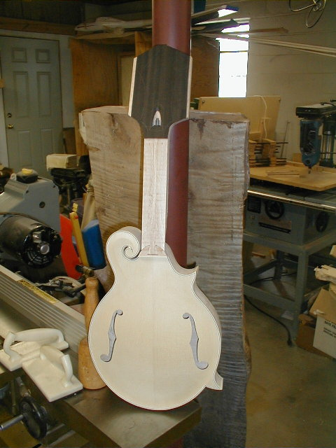

←
12345678910111213
→
Shaping the Neck and fitting to body.
- 94) The dovetail is transfered to a piece of thin cardboard by lining up a piecce of plexiglas (with a line scribed down the middle) on the centerline of the mandolin. The carboard overlaps the dovetail. This is critical in getting proper alighnment and necks angle.
- 95) The back side of the cardboard is scored with an Exacto knife in order to make a template of the neck joint.
- 96) This template is then used to transfer the dovetail to the neck. The cut must be made at the proper distance from the nut so the bridge falls in the proper location.
- 97) After transferring the dovetail to the neck, it is placed in a fixture that holds it at the proper angle so the dovetail can be cut on the bandsaw. Shims can be put in on either end of the fixture to increase or decrease the neck angle according to an individuals playing style. For Chris' mandolin, I'm increasing the neck angle slightly because I know he prefers a low action. This will allow a proper bridge height with the lower action.

- 98) After the dovetail is cut, some of the excess wood on each side of the neck is removed.
- 99) You can see I've roughly tapered the heel to the "button" on the back.
- 
- 100) After some trimming of the dovetail, a snug fit is achieved and the neck is put in the body for the first time. The excess height is trimmed from the heel so the neck sets just slightly lower than the riser block. This will all be sanded level later.
- 101) The fingerboard is positioned and clamped in place. The Dremel is used to drill holes in the bottom of a couple of fret slots so pins may be placed for alignment. This is particularly important during gluing.
- 102) A "microplane" type rasp is used to remove excess wood. These are available from First Quality and are great for highly figured woods like curly maple. Spokeshaves and drawknives tend to pull out hunks of wood when you have this much figure. These are much like the old Stanley Sureform tools, but much sharper and more
aggressive.
- 103) Time to level the back of the peghead. The peghead tapers a bit from around the truss rod area to the top of the peghead. A piece od 0.060" binding is taped to the peghead as a shim.
- 104) The radial arm saw is used as an overhead router to level the back of the peghead.
- 105) Final cleanup and contouring are done with a random orbit sander.
- 106) The ebony veneer (0.025") is glued to the back of the peghead prior to shaping.
←
12345678910111213
→
© Lynn Dudenbostel, 2002.